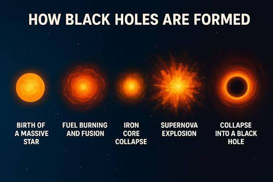
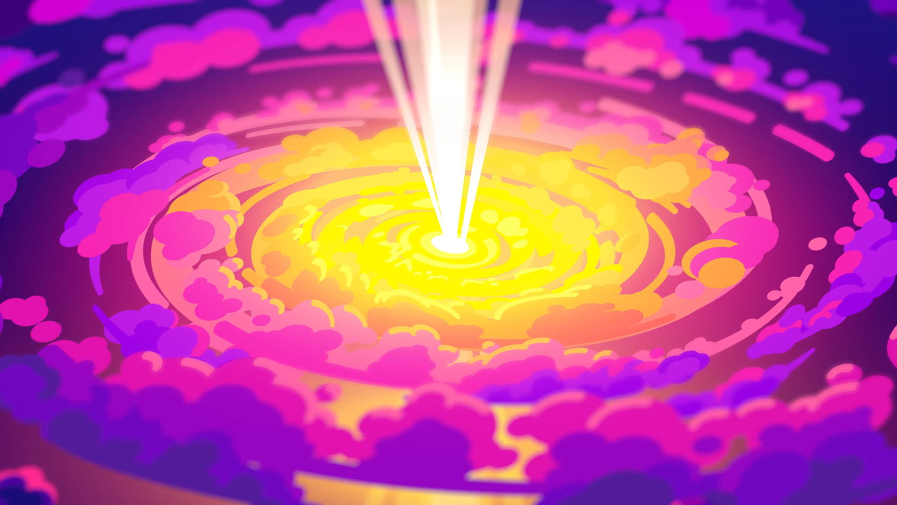
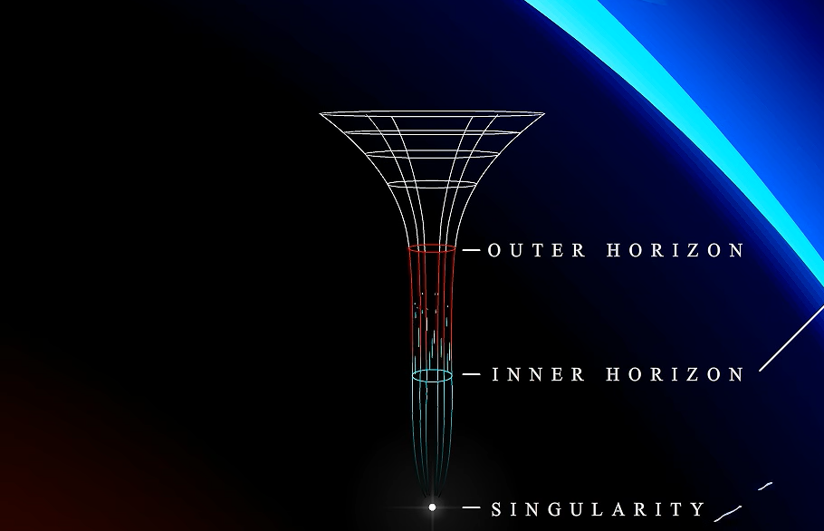
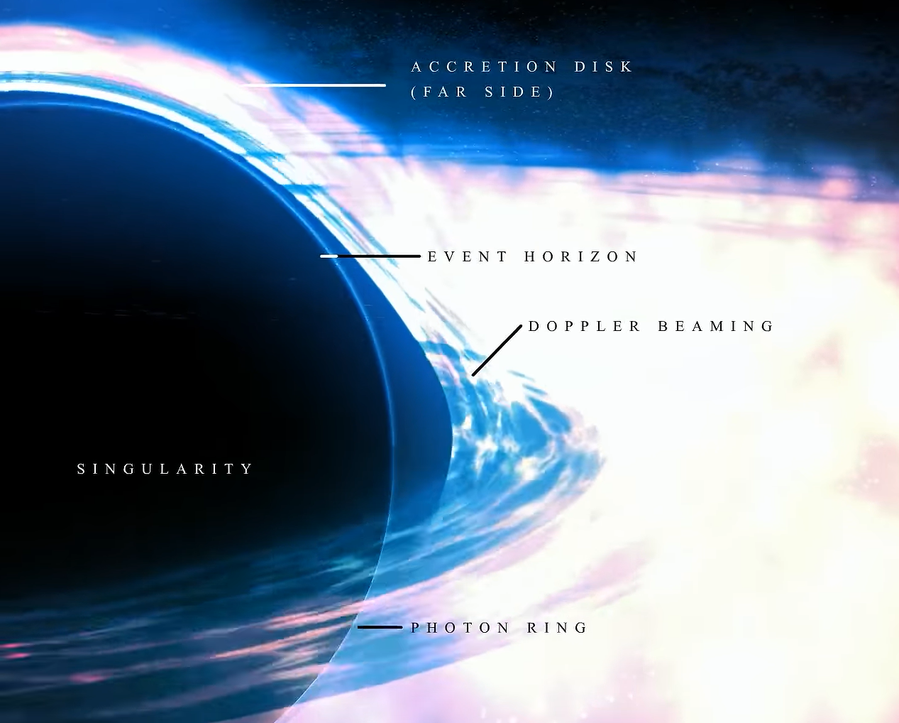

Stellar-mass black holes
These form when the cores of some massive stars collapse at the end of their lives. Their masses are several to many times the mass of the Sun; the exact outcome depends on the star and its surroundings.
Exploring the Universe's Most Mysterious Objects
A black hole is a region of spacetime whose gravity is so strong that, once matter or light crosses its event horizon, it cannot get back out. The event horizon is a boundary, not a solid surface. Black holes are detected by observing how they affect nearby stars and gas, and by studying radiation from material falling toward them.
Black holes are predicted by Einstein's general theory of relativity. Astronomers now have several kinds of evidence for them, including stellar orbits, X-rays from hot gas, gravitational waves from mergers, and images of the glowing surroundings of black holes.
These form when the cores of some massive stars collapse at the end of their lives. Their masses are several to many times the mass of the Sun; the exact outcome depends on the star and its surroundings.

These contain millions or billions of solar masses and are found in the centers of many large galaxies. How the earliest supermassive black holes gained their first mass so quickly is an active research question.

Black holes between stellar-mass and supermassive sizes are difficult to find. A number of candidates have been reported, and astronomers are working to establish their masses and nature.

These are hypothetical black holes that may have formed from dense regions in the very early universe. They have not been confirmed.
A massive star spends much of its life balancing inward gravity with outward pressure from nuclear fusion. When its fuel is depleted, the core may no longer be able to support itself. It collapses, and the star's outer layers may be expelled in a supernova. If the remaining core is massive enough, it can continue collapsing into a black hole. Not every massive star makes a black hole; some leave neutron stars instead.

Visual example: A simplified illustration of a massive star exhausting fuel, collapsing inward, and leaving behind a black hole.
Conceptual illustration by James Webb Telescope Cosmic Explorations.
The first supermassive black holes had to grow in a young universe. One proposed route starts with ordinary stellar remnants that gain mass by pulling in gas and merging with other black holes. Another is a heavy seed: in special conditions, a large cloud of early, mostly hydrogen and helium gas may avoid breaking into many normal stars and collapse into a much more massive black-hole seed. This is called the direct-collapse scenario.
The James Webb Space Telescope observes infrared light, allowing it to study very distant galaxies whose light has been stretched by the expansion of the universe. Webb takes spectra: spreading an object's light into wavelengths so astronomers can examine features made by atoms and molecules.
Webb has identified compact, very distant objects nicknamed little red dots. In 2026, NASA reported that deep JWST spectroscopy of the lensed candidate GLIMPSE-17775 showed a rich set of emission-line features consistent with hot, dense gas around a rapidly feeding black hole. The spectrum offers the strongest evidence yet for the proposed “black-hole star” picture. The interpretation is based on the object's light and its spectral fingerprints—not a direct photograph of a black hole or of one forming.

Artist's concept: A possible black-hole star—an accreting black hole surrounded by dense plasma of a star. This is an illustration of the proposed interpretation of Kurzgesagt - in a nutshell, not a photograph of the object or direct evidence of its appearance.
For more information visit: NASA, ESA, CSA, Vasily Kokorev (UT Austin); designer Leah Hustak (STScI). View NASA's explanation and source image.
In this context, it does not mean a normal star with a black hole inside it. It is a proposed, short-lived stage in which a growing black hole is wrapped in a thick envelope of gas. Gas falling inward releases energy; the surrounding material absorbs and re-emits some of that energy, making the whole unresolved object look compact and star-like from far away. The black hole powers the glow through accretion, rather than through ordinary stellar fusion.

Artist's concept: A black-hole star forming an accretion disk made of dense gasses from an early universe. This is an illustration of the proposed interpretation of Kurzgesagt - in a nutshell, not a photograph of the object or direct evidence of its appearance.
For more information visit: NASA, ESA, CSA, Vasily Kokorev (UT Austin); designer Leah Hustak (STScI). View NASA's explanation and source image.
Direct collapse and a black-hole star describe related but different ideas: direct collapse is a proposed way to make a massive seed; “black-hole star” describes a possible luminous, gas-enshrouded accretion phase. JWST's candidate evidence does not by itself prove how the seed originally formed.
Further reading:
We cannot receive signals from inside an event horizon, so the interior is not something astronomers can photograph or inspect directly. General relativity describes gravity extremely well near black holes, but its equations predict a breakdown at the classical singularity. A theory combining gravity with quantum physics may be needed.


Conceptual still: A black hole with a highlighted event horizon and a speculative interior region beyond classical physics. This is not a real image of the inside of a black hole.
Theoretical visualization for educational use. Credits to Alan Becker.
In the simplest classical models, crossing the event horizon is not like hitting a material wall. Once inside, all future-directed paths lead deeper inward; escaping back outside is no longer possible. Depending on the black hole's mass and the traveler's path, tidal gravity can stretch and squeeze objects. General relativity predicts that continued collapse leads to a singularity or, more precisely, a breakdown of the classical description where its equations predict incomplete paths or extreme curvature. Physicists generally treat this as a sign that the theory is incomplete in that regime, not as proof that an ordinary, infinitely dense point has been physically observed.
Quantum field theory applied to curved spacetime predicts that black holes should emit a very faint thermal glow called Hawking radiation and slowly lose mass. This prediction is influential, but the radiation from known astrophysical black holes is expected to be far too weak to detect with current technology; it has not been directly observed from one. The idea raises a profound question: if a black hole eventually evaporates, what happens to the quantum information about the matter that fell in? This is the black hole information paradox. Many theoretical arguments suggest information is preserved, but the full physical mechanism and its observable consequences remain active research topics.
String theory is one attempt to describe gravity and quantum physics in a unified framework. Within some string-theory models, the fuzzball proposal suggests that a black hole's quantum state may be made of extended string-like ingredients rather than having the smooth empty interior and point singularity of the simplest classical picture. In these models, the event-horizon-scale description can differ from the classical one. Fuzzballs are a proposed theoretical resolution in particular settings—not an observed object, and not a result established for every black hole.
Physicists use thought experiments—such as asking what an observer falling through a horizon experiences, or how information could be recovered from Hawking radiation—to expose tensions between theories. Proposals such as black-hole complementarity, holographic descriptions, and firewalls explore different ways to address those tensions. They do not all agree, and none should be presented as a proven view from inside a black hole. Wormholes also arise in some mathematical solutions, but there is no evidence that astrophysical black holes are portals or that a person could travel through one.
Learn more:
No single telescope can answer every question about black holes. Astronomers combine observations across the electromagnetic spectrum with gravitational-wave measurements and computer models.